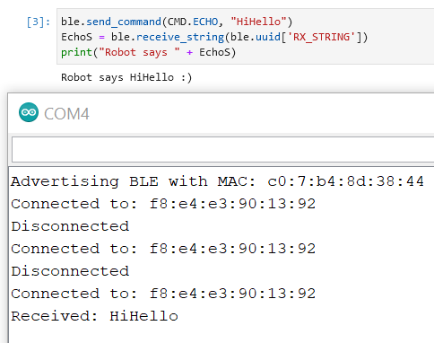
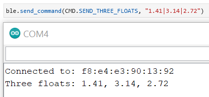
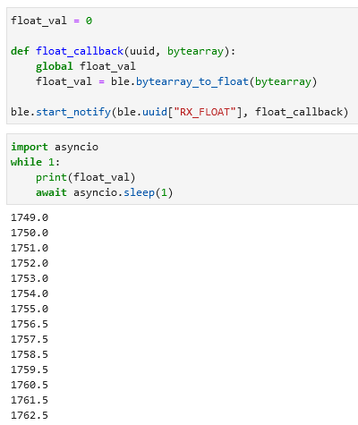

Lab Description
The purpose of this lab is to get the Artemis nano board to communicate with a computer through bluetooth. This is done by modifying given code that is used to program the Artemis,
and Python code used to communicate on the computer side.
With this communication in place, we will be able to send commands to the Artemis from the computer. This will allow for further control of the robot. However, we also need to parse the
communicated data so that the Artemis can understand the commands sent to it. This will also be addressed in this lab.
Setup
Before completing the different parts of this lab, the communication between the Artemis and computer must be setup. Given code for the Artemis is used to print out it's MAC address. This address
is copied over to the computer side to allow for communication between the two devices. Given Python code is then run to establish the connection between the devices. The rest of the lab is then ready
to be completed with this in place.
Lab Sections
Part 1:
Part 1 of this lab involves sending an echo command to the Artemis. The purpose of the echo command is to send a reply to the computer after a command is sent to the Artemis.
This is demonstrated in the image below. "HiHello" is sent from the computer to the Artemis. The Artemis then augments the received string and sends back "HiHello :)". A print out of
the received message was also added on the Artemis side.

The given code already had functions in place to save the received string into a variable. From there, strcat(char_arr, " :)"); was used to augment to received string.
The data is then sent to the computer using the code below.
tx_estring_value.clear();
tx_estring_value.append(char_arr);
tx_characteristic_string.writeValue(tx_estring_value.c_str());
I felt converting the string to an Estring was overkill for this portion of the lab. An Estring is an "Enhanced String" which can be used to make arrays of characters easier to manipulate.
Estrings will likely be used in future labs with more complicated data.
Part 2:
Part 2 of this lab involves using the "send_three_floats" command to send three floats to the Artemis. The computer side of this is simply ble.send_command(CMD.SEND_THREE_FLOATS, "1.41|3.14|2.72").
This command will send the three floats to the connected device. note the '|' that separate the three floats.
The "|" character is used as the delimiter on the Artemis to separate different values using robot_cmd.get_next_value(val), and saves the extracted value into val.

These three floats are saved into separate variables and then printed out to the serial monitor. This can be seen in the image above.
Part 3:
Part 3 of this lab involves setting up a notification handler on the computer side that will automatically update a float value sent by the Artemis.
This allows us to receive new data without having to explicitly call receive_float() every time. The code used to do this can be seen in the image below.

This code works by activating notification on the float GATT characteristic. This is defined using UUID for the float characteristic ble.uuid["RX_FLOAT"]. A callback function is also specified.
This function will be executed when the defined GATT characteristic changed. The callback function will update a global variable with the new float value. However, the received float will be a byte array. This needs
to be converted to a normal float using ble.bytearray_to_float()
Finally, we can ensure our code works by printing out this float every second. asyncio.sleep is specifically used to delay in the while loop as it allows other code to be run while it delays.
Part 4:
Part 4 of this lab compares using the python function receive_float() when a float is characterized
as a float on the Artemis side, and receive_string() when a float is characterized as a string on the Artemis side.
A benefit of using receive_string() is that you can send anything as a string, then convert it to a different data type later. This is especially helpful when you want to send mismatching data, ie. and float and a string, or multiple floats in the same message.
However, the need to convert a string to a float adds extra complexity to your code, which may slow things down and make the code harder to work with. specifying receive_float() when sending a float will reduce complexity by
allowing you to use the received float data immediately. receive_float() should be used whenever possible.